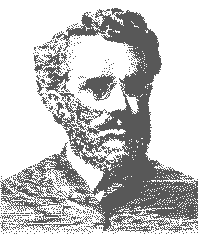

Good News for Seventh-Day Adventists
| Ellet Joseph Waggoner: The Myth and the Man David P. McMahon Exploding the Myth Ellet Joseph Waggoner (1855-1916) was one of the most illustrious individuals in second-generation Seventh-day Adventism. His name will always be associated with the historic twenty-seventh General Conference held in Minneapolis, Minnesota, from October 17 to November 4, 1888. Together with Alonzo T. Jones, Waggoner there spearheaded a revival of justification by faith which ignited vigorous controversy within the Adventist community. Although the "crisis" (1) subsided after 1903, the question of 1888 has flared repeatedly. Numerous efforts have been made to dampen the issue. But each new book on 1888 has only added more fuel to the fire. (2) The subject of 1888 has now returned to agitate the Adventist community. Conferences such as those at Palmdale (3) and Washington, D.C., (4) highlight the fact that justification by faith is once again the great issue in the church. As a result, there is considerable interest in the central figures of the 1888 episode, and particularly in E. J. Waggoner. Robert J. Wieland has recently collected nearly two hundred Ellen G. White statements which appear to endorse the message of Waggoner and Jones. (5) Perhaps her best-known statement is this:
The conviction has grown that there is no hope of finishing the work unless Adventism returns to 1888 and accepts what was there spurned by the majority of the church's representatives. This is why the Adventist consciousness is obsessed with 1888. During the 1950's Robert J. Wieland and Donald K. Short urged the Adventist leadership to make the special light of 1888 available to the church by reprinting some of the writings of Waggoner and Jones. (8) The leading brethren did not then respond to this suggestion. (9) Some of Waggoner's material, however, has recently been republished. Two titles were officially reissued in 1972. (10) Dr. John 0. Ford has prepared and widely distributed a selection of Waggoner's writings. (11) Other works by Waggoner have also been made available through independent sources. (12) In 1977 Wieland published a brochure entitled An Introduction to the 1888 Message Itself. (13) This book drew on the following Waggoner sources: Signs of the Times articles from 1889 to 1891, Christ and His Righteousness (1890), The Gospel in Creation (1894), Waggoner's articles in the British Present Truth, studies presented at the General Conference session of 1897, The Everlasting Covenant (1900) and The Glad Tidings (1900). (14) Despite this resurgent interest in Waggoner, however, there has never been a thorough study of his works. Statements and claims made, even by men of stature, show that essential research has been neglected. Numerous myths about Waggoner have helped mold opinion for many present-generation Seventh-day Adventists. A reexamination of this field is urgently needed. Waggoner's entire relationship to the revolutionary article of justification by faith is highly significant. If we are to properly judge the theological issues now confronting Adventism, we dare not ignore his contribution. It is therefore essential to know what he actually believed and taught. We must distinguish between the Waggoner of history and the Waggoner of Adventist mythology. There is the myth that the message of justification by faith in 1888 was far more advanced than that taught by Luther or Wesley. (15) Wieland audaciously claims that the message of 1888 was "a preaching of 'righteousness by faith' more mature and developed, and more practical than had been preached even by the Apostle Paul." (16) Then there is the myth that Waggoner's writings after 1888 best represent his message at the historic Minneapolis conference. (17) Despite Waggoner's personal moral aberration and defection from organized Adventism, there is the myth that he remained basically sound "in the faith." (18) We will present explicit evidence that Waggoner became lost in the fog of pantheism. Even those aware of his pantheism generally accept the myth that it did not develop until about 1900 or later. (19) We will show that pantheistic sentiments began appearing in Waggoner's writings in the early 1890's. Further, there is the myth that the pantheistic sentiments in Waggoner's works have no intrinsic, connection with his views on the human nature of Christ, the mystical atonement, the righteousness of God and "effective" justification. We believe that the historical record clearly demonstrates that Waggoner's pantheism was integral to his theological system. There is also the myth that any of Waggoner's material can be identified with the message of 1888 merely because he was the author. But his theological thought gradually evolved. To ignore the difference between the early and late Waggoner is like failing to distinguish between the early and later teachings of Luther. Finally, there is the myth that Waggoner's teachings enjoyed the full endorsement of Ellen G. White. If Waggoner had merely historical interest, we might regard these myths with benign indulgence. But since his teachings have now been revived and thrust into prominence, we cannot treat this matter casually. We believe Waggoner made a positive contribution to Adventist thinking. What he said in and around 1888 was the beginning of great light for Adventism. Ironically, many rejected Waggoner when he was basically sound and followed him when he became unsound. It is difficult to resist the thought that this strange turn of events may have been a divine judgment on that generation. Employed as a denominational writer from 1883 to 1903, Waggoner was one of Adventism's most prolific authors. He wrote a number of books, numerous pamphlets and hundreds of journal articles. He dealt largely with topics related to the law of God and the gospel, including expositions of Isaiah, the Gospel of John and the Epistles to the Romans and Galatians. In undertaking our research, we have recovered nearly everything Waggoner published. We have also read virtually every major work on 1888. Waggoner was at least partly the product of his times. He espoused ideas which had historical antecedents in theologians far more prominent than himself. That his developing pantheism coincided with similar theological developments outside Adventism emphasizes the need to explore possible external influences on his thought. Dr. James Buchanan noted that "it would be difficult to invent a new heresy." (20) Some of Waggoner's views may have seemed startlingly new to members of the small and isolated Christian body to which he belonged. But anyone examining the history of theology can trace the record of those who previously held the same ideas. And they can observe the eventual consequences of those concepts. In many respects Waggoner's history is lamentable. His star rose suddenly and shone but a few dazzling moments before plunging into pantheistic darkness. We do not dwell on Waggoner's aberrations with pleasure. But we believe they hold special lessons for our time. Although this may well be the first thorough historical examination of Waggoner, we do not presume it will prove the last or the best. We freely admit that problems remain to be resolved. But we hope this effort will stimulate others to investigate this crucial phase of Adventist history. There is, for example, the tantalizing problem of Mrs. White's apparent change of position on the law in Galatians and her lost "testimony" to Joseph H. Waggoner. (21) One of the impediments to objective research on E. J. Waggoner has been a superficial reliance on what Ellen G. White said about him. But to quote Mrs. White's endorsement of Waggoner is like quoting her endorsement of 0. R. L. Crosier's article on the sanctuary. (22) Some have tried to use this endorsement to support everything Crosier wrote in the article. But careful investigation will show that Mrs. White took a number of positions decidedly contrary to Crosier. There is a great difference between full and qualified endorsement. Admittedly, this raises questions on Ellen G. White's relationship to Waggoner. If he began to seriously depart from the faith after 1891, why did not Mrs. White issue a warning much earlier? Some refuse to believe Waggoner was enmeshed in serious error during the 1890's solely because Mrs. White continued to hold him in high esteem. How could Mrs. White urge Waggoner to accept a Bible-teaching position at Emmanuel Missionary College (1903) when he had been teaching pantheistic sentiments for nearly a decade? This is a problem for Ellen G. White scholars. Rather than closing our eyes to Waggoner's teaching, we suggest possible explanations for Mrs. White's protracted silence over his errors. Perhaps she was impressed that the Lord did not want a confrontation until the issue had fully developed. Maybe she earnestly hoped Waggoner would regain his former soundness. Perhaps she knew that many of Waggoner's critics were only waiting to chortle, "I told you so,"and therefore said nothing. Maybe she did not know or, dare we suggest, was mistaken on some things—unless we wish to contend for her personal infallibility. Perhaps, most seriously of all, allowing even leading brethren to follow Waggoner was evidence of divine wrath upon those who had spurned the gracious invitation of 1888. Thus various possibilities could illuminate Mrs. White's relation to Waggoner. But her endorsements refer to the 1888 period anyway. It is not our purpose to explain Ellen G. White's statements here. We intend to use the primary sources in presenting what Waggoner actually taught. In executing this task, we will follow Waggoner's theological development chronologically. His theological pilgrimage apparently occurred in three stages. First, there was the early Waggoner, who blazed into denominational prominence from the time he began working at the Signs of the Times around 1883 until he reached the zenith of his distinction at the Minneapolis conference of 1888. Next, there was Waggoner in transition from 1889 to 1891. In this brief period a vital shift of emphasis took place in his thinking. Finally, there was Waggoner's awful descent into pantheism after going to England in 1892 to become editor of the British Present Truth. There is no evidence he ever regained his former soundness. We do not say this to deprecate Waggoner's character. His humility and graciousness were impressive to the end. He was deceived on some things. But he appeared transparently honest in his beliefs. He confessed Christ in spite of his confusion. His last plea seemed to have the spirit of him who cried, "God be merciful to me a sinner. And if indeed, as we fondly believe, this was Waggoner's final confession, then his life was not in vain—not because his life was justified by what he did or did not do, but because it was justified by that Infinite Love who, before Waggoner was born, rewrote his history in the holy history of Jesus Christ. Justification by grace does not mean damnation to those with any sinful theology. If that were true, no one could be saved. As Robert MacAfee Brown reviewed the history of the church, he ventured to say:
If this be so, then God must have a special love for Ellet Joseph Waggoner. He used him to stir the Seventh-day Adventist Church in 1888. And He is using him for the same purpose today. ——————————————————
|